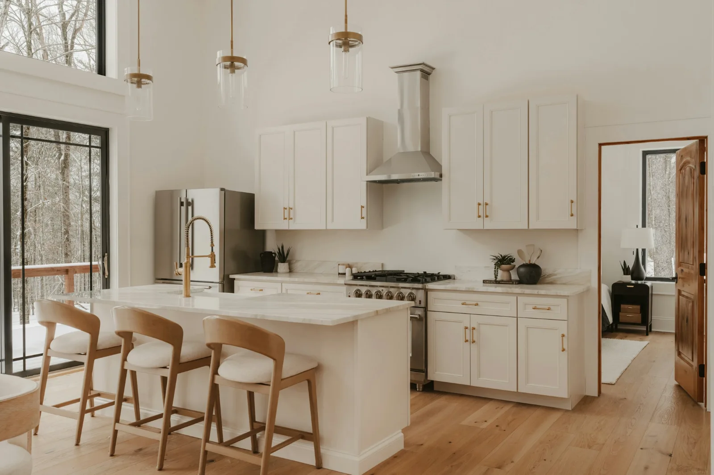

Samtalet
Vi lyssnar på dina idéer och går igenom vad du vill förändra.

Bygg & renovering i Storstockholm
Renovering, snickeri och totalentreprenad.
En kontakt från första idé till färdigt resultat.
En kontaktpersongenom projektet
Kostnadsfritt platsbesökinför din offert
Ansvarsförsäkrat företaggaranti enligt avtal
Från mindre förändring till större helhet
Förnya köket. Skapa ett nytt badrum. Ta hand om hela huset.
Vi hjälper dig att samla idéerna i en tydlig plan.
 Material, linjer och genomtänkta detaljer. Inspirationsfoto.
Material, linjer och genomtänkta detaljer. Inspirationsfoto.Du ska kunna fokusera på hur det ska bli. Vi hjälper dig att hålla ihop vägen dit.
Svensk Totalbygg i Norden AB arbetar med privatpersoner och företag i Storstockholm. Vid totalentreprenad samordnar vi yrkesgrupper, planering och arbetsledning enligt avtal.
Från första fundering till ett arbete som är färdigt att användas.
Vi lyssnar på dina idéer och går igenom vad du vill förändra.
Vi tittar på förutsättningarna och klargör omfattningen tillsammans.
Du får en skriftlig offert med omfattning, prisform och planering.
Arbetet samordnas och avslutas med en gemensam genomgång.
Läs vad kunder berättar om sina uppdrag.
”Arbetet utfördes professionellt, noggrant och med ett mycket fint slutresultat.”
”Jobbet var väl utfört och de kom som utlovat”
Korta utdrag ur publicerade omdömen. Du kan även läsa företagets omdömen på Reco.
Några arbeten ur företagets publicerade referenser. Av hänsyn till kundernas integritet visas referensprojekten i text.
En 1950-talsvilla fick ett nytt sammanhang med renoverat kök och badrum, nya golv och målade ytor.
Om arbetetBadrummet förnyades med glasad duschvägg, golvvärme och ett tidlöst uttryck.
Om arbetetEtt kök med köksö, moderna vitvaror, bänkskiva i ek och förbättrad förvaring.
Om arbetetRing eller beskriv ditt projekt. Vi bokar ett kostnadsfritt platsbesök och går igenom förutsättningarna inför en skriftlig offert.
Vi hjälper privatpersoner och företag i hela Storstockholm, bland annat Stockholm, Huddinge, Nacka, Tyresö, Haninge och Täby.
Ja. Vid totalentreprenad samordnar vi arbetsmoment och yrkesgrupper enligt avtal. Omfattning, ansvar och kontaktperson bestäms inför start.
Omfattning, material och fastighetens skick påverkar både pris och tid. Du får ett projektspecifikt upplägg efter genomgången.
Företaget är ansvarsförsäkrat. Garanti och andra villkor framgår av avtalet för ditt projekt.
Möjligheten beror på arbetet och dina förutsättningar. Vi går igenom arbetskostnad och dokumentation inför offert. Aktuella villkor finns hos Skatteverket.
Berätta om dina planer.
Vi hjälper dig att hitta nästa steg.